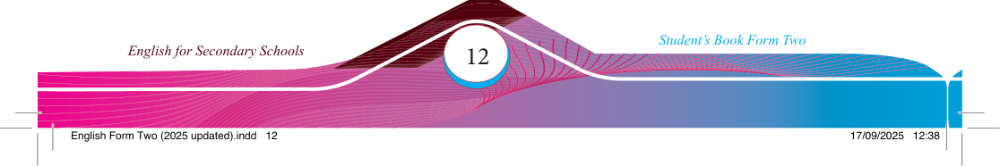
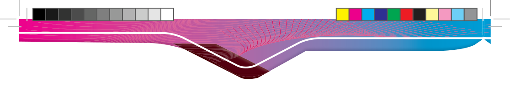

(c) Read carefully the passage “HIV and AIDS Pandemic in Mwendakulima
Village” and respond to the items that follow.
HIV and AIDS pandemic in Mwendakulima Village
HIV and AIDS have become a serious problem in Mwendakulima Village. The
pandemic has caused suffering for many families. People living with HIV are often
treated poorly and unfairly, which has caused stigma. Stigma includes avoiding
them, gossiping about them and using violence. Should we allow this to continue at Mwendakulima? No, it should be stopped immediately. People living with HIV and AIDS are human beings like others in this village.
Stigma comes from ignorance and myths about HIV/AIDS. Many people are afraid
of being infected by living with people with HIV, even though this does not transmit
HIV. Good news! The government has started a strong campaign to fi ght against
stigma. Concerned people, like Mama Juma, are urging people to visit hospitals and
see that many people living with HIV/AIDS are innocent.
There is no reason to discriminate against people living with HIV. With proper care
and medication, they can live happily and productively. The community should hold
meetings to educate everyone about HIV prevention and care since fear and blame can
be more harmful than the pandemic itself. This is just one example of how innocent people suffer because of stigma and violence. There is also a lot of stigma against people with physical disabilities, albino individuals and elderly women. Everyone should say ‘no’ to discrimination and violence against humans.
Adapted from TIE (2018), English for Secondary Schools- Student’s Book Form Two
Practice
1. Identify sentences with rising intonation in the passage.
2. Identify sentences with falling intonation.
3. Identify sentences with fall-rise and rise-fall intonation.
4. Re-write the sentences you have identifi ed and underline words/phrases that carry rising, falling, rise-fall and fall-rise intonation.
5. Read the sentences you have identifi ed aloud, paying attention to where intonation rises and falls.